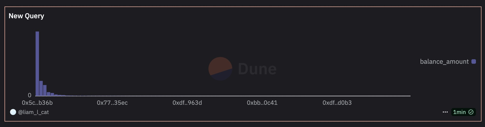

Chapter 3 Dune SQL
Dune 的 SQL 查询引擎主要依赖 Trino（前身为 PrestoSQL）,Trino（PrestoSQL） 是一种高效的分布式查询引擎，专门用于处理大规模数据集。它适用于 OLAP（在线分析处理）场景，能够高效查询存储在 Dune 数据仓库中的链上数据。
3.1 Dune 常见语法以及使用案例
3.1.1 排序
假设我想要查看某一个地址在2024年的ETH大额转出.
select --Select后跟着需要查询的字段，多个字段用英文逗号分隔
block_time
,"from"
,"to"
,hash
,value /power(10,18) as value --通过将value除以/power(10,18)来换算精度，18是以太坊的精度
from ethereum.transactions --从 ethereum.transactions表中获取数据
where block_time > date('2024-01-01') --限制Transfer时间是在2024年1月1日之后
and "from" = 0x3DdfA8eC3052539b6C9549F12cEA2C295cfF5296 --限制孙哥的钱包
and value /power(10,18) >1000 --限制ETH Transfer量大于1000
order by block_time --基于blocktime做升序排列，如果想降序排列需要在末尾加desc
3.1.2 聚合
通过聚合函数计算某一个统计量
select
sum( value /power(10,18) ) as value --对符合要求的数据的value字段求和
,max( value /power(10,18) ) as max_value --求最大值
,min( value /power(10,18) ) as min_value--求最小值
,count( hash ) as tx_count --对符合要求的数据计数，统计有多少条
,count( distinct to ) as tx_to_address_count --对符合要求的数据计数，统计有多少条(按照去向地址to去重)
from ethereum.transactions --从 ethereum.transactions表中获取数据
where block_time > date('2024-01-01') --限制Transfer时间是在2024年1月1日之后
and "from" = 0x3DdfA8eC3052539b6C9549F12cEA2C295cfF5296
and value /power(10,18) > 1000 --限制ETH Transfer量大于10003.1.3 分组聚合
按照时间维度来查看某一个指标的趋势.
第一步, 将时间戳转换成为不同格式
-- 把粒度到秒的时间转化为天/小时/分钟(为了方便后续按照天或者小时聚合)
select --Select后跟着需要查询的字段，多个字段用空格隔开
block_time --transactions发生的时间
,date_trunc('hour',block_time) as stat_hour --转化成小时的粒度
,date_trunc('day',block_time) as stat_date --转化成天的粒度
,date_trunc('week',block_time) as stat_week--转化成week的粒度
,"from"
,"to"
,hash
,value /power(10,18) as value --通过将value除以/power(10,18)来换算精度，18是以太坊的精度
from ethereum.transactions --从 ethereum.transactions表中获取数据
where block_time > date('2024-01-01') --限制Transfer时间是在2024年1月1日之后
and "from" = 0x3DdfA8eC3052539b6C9549F12cEA2C295cfF5296
and value /power(10,18) >1000 --限制ETH Transfer量大于1000
order by block_time --基于blocktime做升序排列，如果想降序排列需要在末尾加desc第二步 , 基于处理之后的时间, 进行聚合
select
date_trunc('day',block_time) as stat_date
,sum( value /power(10,18) ) as value --对符合要求的数据的value字段求和
from ethereum.transactions --从 ethereum.transactions表中获取数据
where block_time > date('2024-01-01') --限制Transfer时间是在2024年1月1日之后
and "from" = 0x3DdfA8eC3052539b6C9549F12cEA2C295cfF5296
and value /power(10,18) > 1000 --限制ETH Transfer量大于1000
group by 1
order by 13.1.4 子查询
首先, 查看花费的ETH价值多少USD
select
block_time
,transactions_info.stat_minute as stat_minute
,"from"
,"to"
,hash
,eth_amount --通过将value除以/power(10,18)来换算精度，18是以太坊的精度
,price
,eth_amount * price as usd_value
from
(
select --Select后跟着需要查询的字段，多个字段用空格隔开
block_time
,date_trunc('minute',block_time) as stat_minute --把block_time用date_trunc处理成分钟，方便作为主键去关联
,"from"
,"to"
,hash
,value /power(10,18) as eth_amount --通过将value除以/power(10,18)来换算精度，18是以太坊的精度
from ethereum.transactions --从 ethereum.transactions表中获取数据
where block_time > date('2024-01-01') --限制Transfer时间是在2024年1月1日之后
and "from" = 0x3DdfA8eC3052539b6C9549F12cEA2C295cfF5296
and value /power(10,18) >1000 --限制ETH Transfer量大于1000
order by block_time --基于blocktime做升序排列，如果想降序排列需要在末尾加desc
) transactions_info
left join --讲transactions_info与price_info的数据关联，关联方式为 left join
(
--prices.usd表里存的是分钟级别的价格数据
select
date_trunc('minute',minute) as stat_minute --把minute用date_trunc处理成分钟，方便作为主键去关联
,price
from prices.usd
where blockchain = 'ethereum' --取以太坊上的价格数据
and symbol = 'WETH' --取WETH的数据
) price_info on transactions_info.stat_minute = price_info.stat_minute --left join关联的主键为stat_minute大部分情况下我们需要的数据不是在同一张表里，比如transaction表存储的就是只有transaction数据，没有价格数据。如果我们希望能够计算出transaction对应USD 价值，那就需要用联表查询把价格数据给关联进来.
3.1.5 CURRENT_TIMESTAMP和 CURRENT_DATE函数
CURRENT_TIMESTAMP和 可以获取当前系统的日期和时间值, CURRENT_DATE 用于获取当前的日期.
SELECT
CURRENT_TIMESTAMP, /* 当前系统日期和时间 */
CURRENT_DATE, /* 当前系统日期 */
CURRENT_DATE, /* 可以省略括号 */
DATE_TRUNC('day', CURRENT_TIMESTAMP) /* 与current_date相同 */3.1.6 dateadd 和datediff
函数dateadd(unit, value, expr)在一个日期表达式上添加一个的日期时间单位。 函数date_sub(startDate, numDays)作用类似，但表示的意思正好相反，即负数表示返回之后的日期，正数表示之前的日期。
select date_add('MONTH', 2, current_date) -- 当前日期加2个月后的日期
,date_add('HOUR', 12, now()) -- 当前日期时间加12小时
,date_add('DAY', -2, current_date) -- 当前日期减去2天
,date_add('DAY', 2, current_date) -- 当前日期加上2天
,date_add('DAY', -5, current_date) -- 当前日期加上-5天，相当于减去5天
,date_diff('DAY', date('2022-11-22'), date('2022-11-25')) -- 结束日期早于开始日期，返回负值
,date_diff('DAY', date('2022-11-25'), date('2022-11-22')) -- 结束日期晚于开始日期，返回正值3.1.7 INTERVAL
Interval是一种数据类型，以指定的日期时间单位表示某个时间间隔。
select now() - interval '2' hour -- 2个小时之前
,current_date - interval '7' day -- 7天之前
,now() + interval '1' month -- 一个月之后的当前时刻3.1.8 条件判断
首先是CASE 语句 :
-- ...省略部分代码...
profiles_summary as (
select (
case
when length(short_name) >= 20 then 20 -- 域名长度大于20时，视为20对待
else length(short_name) -- 域名长度小于20，直接使用其长度值
end) as name_length, -- 将case语句评估返回的结果命名为一个新的字段
handle_type,
count(*) as name_count
from profile_created
group by 1, 2
),
profiles_total as (
select count(*) as total_profile_count,
sum(case
when handle_type = 'Pure Digits' then 1 -- 类型值等于给定值，返回1
else 0 -- 类型值不等于给定值，返回 0
end
) as pure_digit_profile_count,
sum(case
when handle_type = 'Pure Letters' then 1 -- 类型值等于给定值，返回1
else 0 -- 类型值不等于给定值，返回 0
end
) as pure_letter_profile_count
from profile_created
)
-- ...省略部分代码...其次是if 表达式
select if(1 < 2, 'a', 'b') -- 条件评估结果为真，返回第一个表达式
,if('a' = 'A', 'case-insensitive', 'case-sensitive') -- 字符串值区分大小写3.1.9 字符串处理
- 字符串截取 : substring
SELECT
SUBSTRING('apple', 1, 2)
// ap- 字符串拼接
字符串的拼接可以使用 concat 和 || 关键字
select concat('a', ' ', 'b', ' c') -- 连接多个字符串
, 'a' || ' ' || 'b' || ' c' -- 与concat()功能相同3.1.10 窗口函数
多行数据的组合成为窗口（Window）。对窗口中的一组行进行操作并根据该组行计算每一行的返回值的函数叫窗口函数。窗口函数对于处理任务很有用，例如计算移动平均值、计算累积统计量或在给定当前行的相对位置的情况下访问行的值。
select price_date,
contract_address,
symbol,
decimals,
price,
row_number() over (partition by contract_address order by price_date desc) as row_num -- 按分区单独生成行号
from latest_token_price3.2 Dune 常见查询
3.2.1 ERC20 代币价格
- 查询ERC29代币的最新价格
prices.usd表中的价格是按分钟记录的，我们只需要根据代币的符号及其归属的区块链取最新的一条记录即可，如果有合约地址，也可以使用合约地址来查询。usd_latest表中则记录了每种代币的最新价格，每个代币只有一行记录。
因为价格信息按每分钟每个代币一条记录的方式保存，具体到每一个代币其记录数量也很庞大，我们通过限制读取最新的部分数据来提高查询的效率。由于偶尔可能会存在一定的延迟，下面的实例中我们从过去6小时的记录里面读取最新的一条，确保能取到价格。
查询某一个大笔的最新价格 , 这里查询的是WETH的价格:
select * from prices.usd
where symbol = 'WETH'
and blockchain = 'ethereum'
and minute >= now() - interval '6' hour
order by minute desc
limit 1也可以使用合约地址来查询价格:
select * from prices.usd
where contract_address = 0xc02aaa39b223fe8d0a0e5c4f27ead9083c756cc2 -- WETH
and minute >= now() - interval '6' hour
order by minute desc
limit 1从prices.usd_latest表读取最新价格信息：
select * from prices.usd_latest
where symbol = 'WETH'
and blockchain = 'ethereum'- 查询多个ERC20代币的最新价格
从prices.usd_latest表读取多个代币的最新价格信息：
select * from prices.usd_latest
where symbol in ('WETH', 'WBTC', 'USDC')
and blockchain = 'ethereum'从prices.usd表读取多个代币的最新价格信息：
select symbol, decimals, price, minute
from (
select row_number() over (partition by symbol order by minute desc) as row_num, *
from prices.usd
where symbol in ('WETH', 'WBTC', 'USDC')
and blockchain = 'ethereum'
and minute >= now() - interval '6' hour
order by minute desc
) p
where row_num = 1- 查询ERC20 代币的平均每日价格
当我们需要查询某个ERC20代币每一天的平均价格时，只能使用prices.usd表来实现。通过设置要查询价格的日期范围（或者不加日期范围取全部日期的数据），按天汇总，使用avg()函数求得平均值，就可以得到按天的价格数据。SQL如下:
select date_trunc('day', minute) as block_date,
avg(price) as price
from prices.usd
where symbol = 'WETH'
and blockchain = 'ethereum'
and minute >= date('2023-01-01')
group by 1
order by 1- 从DeFi兑换记录中计算价格
une上的价格数据表prices.usd是通过spellbook来维护的，里面并没有包括所有支持的区块链上面的所有代币的价格信息。特别是当某个新的ERC20代币新发行上市，在DEX交易所进行流通（比如XEN），此时Dune的价格表并没有这个代币的数据。此时，我们可以读取DeFi项目中的兑换数据，比如Uniswap中的Swap数据，将对应代币与USDC（或者WETH）之间的兑换价格计算出来，再通过USDC或WETH的价格数据换算得到美元价格。
with xen_price_in_usdc as (
select date_trunc('hour', evt_block_time) as block_date,
'XEN' as symbol,
'0x06450dee7fd2fb8e39061434babcfc05599a6fb8' as contract_address, -- XEN
18 as decimals,
avg(amount1 / amount0) / pow(10, (6-18)) as price --USDC: 6 decimals, XEN: 18 decimals
from (
select contract_address,
abs(amount0) as amount0,
abs(amount1) as amount1,
evt_tx_hash,
evt_block_time
from uniswap_v3_ethereum.Pair_evt_Swap
where contract_address = '0x353bb62ed786cdf7624bd4049859182f3c1e9e5d' -- XEN-USDC 1.00% Pair
and evt_block_time > '2022-10-07'
and evt_block_time > now() - interval '30 days'
) s
group by 1, 2, 3, 4
),
usdc_price as (
select date_trunc('hour', minute) as block_date,
avg(price) as price
from prices.usd
where contract_address = '0xa0b86991c6218b36c1d19d4a2e9eb0ce3606eb48' -- USDC
and minute > '2022-10-07'
and minute > now() - interval '30 days'
group by 1
)
select x.block_date,
x.price * u.price as price_usd
from xen_price_in_usdc x
inner join usdc_price u on x.block_date = u.block_date
order by x.block_date- 从DeFi交易魔法表计算价格
如果相应的DeFi交易数据已经集成到了dex.trades表中，那么使用该表来计算价格会更加简单。我们可以将amount_usd与token_bought_amount或者token_sold_amount相除，得到对应代币的USD价格。
with trade_detail as (
select block_time,
tx_hash,
amount_usd,
token_bought_amount,
token_bought_symbol,
token_sold_amount,
token_sold_symbol
from dex.trades
where project_contract_address = 0x8ad599c3a0ff1de082011efddc58f1908eb6e6d8
and block_date >= now() - interval '3' day
order by block_time desc
limit 1000
)
select avg(
case when token_bought_symbol = 'WETH' then amount_usd / token_bought_amount
else amount_usd / token_sold_amount
end
) as price
from trade_detail3.2.2 代币持有者相关数据
有时候, 我们还需要查询某个代币的持有者数量、代币总供应量（流通量）、各持有者的账户余额（例如持有最多的账号的余额）等相关信息。
与比特币通过未花费的交易产出（UTXO）来跟踪账户余额不同，以Ethereum为代表的EVM兼容区块链使用了账户余额的模型。每个账号地址有针对每种ERC20代币的转入记录和转出记录，将这些转入和转出数据汇总到一起，就可以得到账户的当前余额。
要查询单个ERC20代币的账户余额信息，首先我们需要知道对应代币的合约地址。这个可以通过查询tokens.erc20表来获得。 假设我们想要知道DOGE合约的地址:
select * from tokens.erc20
where symbol = 'DOGE'
and blockchain = 'bnb'
地址为: 0xba2ae424d960c26247dd6c32edc70b295c744c43
3.2.3 查询代币持有者数量和代币的总流通量
不管是要计算某个账户下某个代币的余额，还是计算某个代币全部持有者账户下的余额，我们都需要将转入转出数据合并到一起。对于转入数据，我们取to为用户的地址，金额为正数。对于转出数据，则取from为用户地址，同时金额乘以“-1”使其变成负数。
select * from (
select evt_block_time,
evt_tx_hash,
contract_address,
"to" as address,
cast(value as decimal(38, 0)) as amount
from erc20_ethereum.evt_Transfer
where contract_address = 0x50d1c9771902476076ecfc8b2a83ad6b9355a4c9
union all
select evt_block_time,
evt_tx_hash,
contract_address,
"from" as address,
-1 * cast(value as decimal(38, 0)) as amount
from erc20_ethereum.evt_Transfer
where contract_address = 0x50d1c9771902476076ecfc8b2a83ad6b9355a4c9
)
limit 10 -- for performance在上面的查询中，我们使用union all将每个账户地址中转入的和转出的FTT Token合并到一起，并且只取了10条样本数据。注意我们使用value::decimal(38, 0)对value字段对值进行了强制转换，因为现在这个字段是以字符串形式保存的，不做转换会在计算时遇到一些问题。
这里合并到一起的是明细转账数据，我们需要计算的账户余额是汇总数据，可以在上述查询基础上，将其放入一个CTE定义中，然后针对CTE执行汇总统计。考虑到很多代币的持有人地址数量可能很多（几万甚至更多），我们通常关注的是总持有人数、总流通量和持有量最多的那部分地址，我们可以将按地址汇总的查询也放入一个CTE中，方便在此基础上根据需要做进一步的统计。这里我们首先统计持有者总数，查询时排除那些当前代币余额为0的地址。
with transfer_detail as (
select evt_block_time,
evt_tx_hash,
contract_address,
"to" as address,
cast(value as decimal(38, 0)) as amount
from erc20_ethereum.evt_Transfer
where contract_address = 0x50d1c9771902476076ecfc8b2a83ad6b9355a4c9
union all
select evt_block_time,
evt_tx_hash,
contract_address,
"from" as address,
-1 * cast(value as decimal(38, 0)) as amount
from erc20_ethereum.evt_Transfer
where contract_address = 0x50d1c9771902476076ecfc8b2a83ad6b9355a4c9
),
address_balance as (
select address,
sum(amount) as balance_amount
from transfer_detail
group by address
)
select count(*) as holder_count,
sum(balance_amount / 1e18) as supply_amount
from address_balance
where balance_amount > 0上面的查询中，我们在address_balance这个CTE里面按地址统计了账户余额，然后在最后的查询中计算当前余额大于0的地址数量（持有者数量）和所有账户的余额汇总（流通总量）。因为FTT代币的小数位数是18位，我们在计算supply_amount时，将原始金额除以1e18就换算成了带有小数位数的金额，这个就是FTT代币的总流通量。需要注意，不同的ERC20代币有不同的小数位数，前面查询tokens.erc20表的返回结果有这个数据。1e18是power(10, 18)的一种等价缩写，表示求10的18次方。由于FTT代币有2万多个持有地址，这个查询相对耗时较长，可能需要几分钟才能执行完毕。
3.2.4 查询持有代币最多的地址
因为我们查询的是单个代币，我们可以将硬编码的代币地址替换为一个查询参数{{token_contract_address}}，并将上面FTT代币的合约地址设置为默认值，这样就可以灵活地查询任意代币的数据了。下面的查询返回持有代币数量最多的100个地址：
with transfer_detail as (
select evt_block_time,
evt_tx_hash,
contract_address,
"to" as address,
cast(value as decimal(38, 0)) as amount
from erc20_ethereum.evt_Transfer
where contract_address = {{token_contract_address}}
union all
select evt_block_time,
evt_tx_hash,
contract_address,
"from" as address,
-1 * cast(value as decimal(38, 0)) as amount
from erc20_ethereum.evt_Transfer
where contract_address = {{token_contract_address}}
),
address_balance as (
select address,
sum(amount / 1e18) as balance_amount
from transfer_detail
group by address
)
select address,
balance_amount
from address_balance
order by 2 desc
limit 100
这里查看了持有金额最大的前100持有者.

我们可以看到, 几个地址占据了大量的DOGE币.
3.2.5 查询不同代币持有者的持有金额分布
按经验法则统计分布情况： 因为统计的是金额的区间分布（统计数量分布时也类似）我们可以选择典型的金额进行分区：10000以上，1000-10000之间，500-1000之间，100-500之间，10-100之间，1-10之间，以及小于1等。
with transfer_detail as (
-- Same as previous sample
),
address_balance as (
select address,
sum(amount / 1e18) as balance_amount
from transfer_detail
group by address
)
select (case when balance_amount >= 10000 then '>= 10000'
when balance_amount >= 1000 then '>= 1000'
when balance_amount >= 500 then '>= 500'
when balance_amount >= 100 then '>= 100'
when balance_amount >= 10 then '>= 10'
when balance_amount >= 1 then '>= 1'
else '< 1.0'
end) as amount_area_type,
(case when balance_amount >= 10000 then 10000
when balance_amount >= 1000 then 1000
when balance_amount >= 500 then 500
when balance_amount >= 100 then 100
when balance_amount >= 10 then 10
when balance_amount >= 1 then 1
else 0
end) as amount_area_id,
count(address) as holder_count,
avg(balance_amount) as average_balance_amount
from address_balance
group by 1, 2
order by 2 desc这样就可以查询出, 不同金额区间内, 有多少的人.
3.3 其他常用查询
3.3.1 使用CTE自定义数据表
对于一些来源外部数据源的数据或者手动整理的少量数据，我们可以考虑在查询内使用CTE来生成自定义数据列表
with raydium_lp_pairs(account_key, pair_name) as (
values
('58oQChx4yWmvKdwLLZzBi4ChoCc2fqCUWBkwMihLYQo2', 'SOL/USDC'),
('7XawhbbxtsRcQA8KTkHT9f9nc6d69UwqCDh6U5EEbEmX', 'SOL/USDT'),
('AVs9TA4nWDzfPJE9gGVNJMVhcQy3V9PGazuz33BfG2RA', 'RAY/SOL'),
('6UmmUiYoBjSrhakAobJw8BvkmJtDVxaeBtbt7rxWo1mg', 'RAY/USDC'),
('DVa7Qmb5ct9RCpaU7UTpSaf3GVMYz17vNVU67XpdCRut', 'RAY/USDT'),
('GaqgfieVmnmY4ZsZHHA6L5RSVzCGL3sKx4UgHBaYNy8m', 'RAY/SRMSOL'),
('6a1CsrpeZubDjEJE9s1CMVheB6HWM5d7m1cj2jkhyXhj', 'STSOL/USDC'),
('43UHp4TuwQ7BYsaULN1qfpktmg7GWs9GpR8TDb8ovu9c', 'APEX4/USDC')
)
select * from raydium_lp_pairs3.3.2 读取数组和结构体
select evt_tx_hash, deltas, token -- 返回拆分后的字段
from balancer_v2_arbitrum.Vault_evt_PoolBalanceChanged
cross join unnest(tokens) as tbl1(token) -- 拆分为多行，新字段命名为 token
where evt_tx_hash = 0x65a4f35d81fd789d93d79f351dc3f8c7ed220ab66cb928d2860329322ffff32c3.3.3 读取JSON数据
select json_value(vars, 'lax $.to') as user_address, -- 读取json字符串中的用户地址
json_value(vars, 'lax $.handle') as handle_name, -- 读取json字符串中的用户昵称
call_block_time,
output_0 as profile_id,
call_tx_hash
from lens_polygon.LensHub_call_createProfile
where call_success = true
limit 1003.3.4 ERC20 代币在合约中的流入流出情况
追踪 ERC20 代币在合约中的流入流出情况。它可以帮助你分析特定 ERC20 代币的流动性以及它进入合约的频率。
WITH
-- 选择代币信息，获取合约地址和区块链类型
selected_tokens AS (
SELECT
symbol, contract_address, blockchain, decimals
FROM (
SELECT
upper(tk.symbol) AS symbol, -- 将代币符号转换为大写，确保符号匹配
tk.contract_address,
tk.blockchain,
tk.decimals,
COALESCE(count(*),0) AS transfers -- 计算过去 5 天内的转账数量，若没有则为 0
FROM tokens.erc20 tk -- 从 ERC20 代币表中选择代币
LEFT JOIN evms.erc20_transfers tr
ON tk.blockchain = tr.blockchain -- 匹配相同区块链
AND tk.contract_address = tr.contract_address -- 匹配相同代币合约地址
AND tr.evt_block_time > now() - interval '5' day -- 过滤过去 5 天的转账数据
AND tr.blockchain = '{{3. Blockchain}}' -- 仅限指定的区块链
WHERE ('{{1. Token Symbol}}' = upper(tk.symbol)
OR try(from_hex('{{2. Token Contract}}')) = tk.contract_address) -- 根据代币符号或合约地址过滤
AND tk.blockchain = '{{3. Blockchain}}' -- 确保符合指定区块链
GROUP BY 1,2,3,4
ORDER BY count(*) DESC -- 按转账数量降序排列
LIMIT 1 -- 只选择符合条件的第一个代币
)
UNION ALL
-- 如果用户输入了多个地址或没有找到代币，则直接解析输入的合约地址
SELECT
NULL AS symbol,
from_hex(trim(c.address)) AS contract_address, -- 将输入的地址字符串转换为合约地址
'{{3. Blockchain}}' AS blockchain,
18 AS decimals -- 默认代币小数位为 18
FROM unnest(split('{{2. Token Contract}}',',')) AS c(address) -- 处理多个合约地址
WHERE try(from_hex(trim(c.address))) IS NOT NULL
AND lower(c.address) != 'none' -- 排除无效地址
AND try(from_hex(trim(c.address))) NOT IN (SELECT DISTINCT contract_address FROM tokens.erc20) -- 排除已存在的 ERC20 合约地址
),
-- 获取代币的余额和转账数据
erc20_balances AS (
WITH erc20_in AS ( -- 计算代币存入的金额
SELECT
to AS address,
SUM(tr.value/pow(10, tk.decimals)) AS tokens_funded, -- 计算存入的代币数量
SUM(CASE WHEN tr.evt_block_time >= now() - interval '{{4. Days}}' day THEN tr.value ELSE cast(0 AS uint256) END)/pow(10, tk.decimals) AS tokens_funded_days -- 过去 N 天的存款金额
FROM evms.erc20_transfers tr
JOIN selected_tokens tk ON tk.blockchain = tr.blockchain AND tk.contract_address = tr.contract_address
GROUP BY 1
),
erc20_out AS ( -- 计算代币支出的金额
SELECT
"from" AS address,
SUM(tr.value/pow(10, tk.decimals)) AS tokens_spent, -- 计算支出的代币数量
SUM(CASE WHEN tr.evt_block_time >= now() - interval '{{4. Days}}' day THEN tr.value ELSE cast(0 AS uint256) END)/pow(10, tk.decimals) AS tokens_spent_days -- 过去 N 天的支出金额
FROM evms.erc20_transfers tr
JOIN selected_tokens tk ON tk.blockchain = tr.blockchain AND tk.contract_address = tr.contract_address
GROUP BY 1
)
-- 计算每个地址的代币余额变化：存入、支出及总余额
SELECT
erc20_in.address,
CAST(tokens_funded AS double) - COALESCE(CAST(tokens_spent AS double), 0) AS balance, -- 计算当前余额
COALESCE(CAST(tokens_funded_days AS double), 0) AS balance_in, -- 计算过去 N 天的存款金额
-1 * COALESCE(CAST(tokens_spent_days AS double), 0) AS balance_out -- 计算过去 N 天的支出金额
FROM erc20_in
LEFT JOIN erc20_out ON erc20_in.address = erc20_out.address
WHERE CAST(tokens_funded AS double) - COALESCE(CAST(tokens_spent AS double), 0) > 0 -- 只保留余额大于 0 的地址
)
-- 查询最终结果，展示代币的余额变化和合约名称等信息
SELECT
c.name AS contract_name, -- 合约名称
get_href(get_chain_explorer('{{3. Blockchain}}') || '/address/' || CAST(b.address AS varchar), CAST(b.address AS varchar)) AS address, -- 获取合约地址的区块浏览器链接
ROUND(b.balance, 3) AS balance, -- 当前余额（保留三位小数）
ROUND(b.balance - (b.balance_in + b.balance_out), 3) AS balance_last_period, -- 上一个时间段的余额
'||' AS split, -- 分隔符
b.balance_in AS tokens_in, -- 当前时间段的存款
b.balance_out AS tokens_out, -- 当前时间段的支出
(b.balance_in + b.balance_out) AS balance_changed -- 当前时间段的余额变化（存款和支出的总和）
FROM erc20_balances b
LEFT JOIN evms.creation_traces cre ON cre.blockchain = '{{3. Blockchain}}' AND cre.address = b.address -- 匹配合约创建信息
LEFT JOIN safe.safes_all sf ON sf.blockchain = '{{3. Blockchain}}' AND sf.address = b.address -- 排除 safes 钱包
LEFT JOIN (SELECT address, blockchain, max_by(name, updated_at) AS name FROM labels.contracts GROUP BY 1,2) c ON c.blockchain = '{{3. Blockchain}}' AND c.address = b.address -- 获取合约名称
WHERE
(cre.address IS NOT NULL AND sf.address IS NULL) -- 排除 safes 和 EOa 钱包
AND
( -- 保留符合余额阈值的地址
b.balance >= {{5. Minimum Balance Threshold}}
OR b.balance - (b.balance_in + b.balance_out) >= {{5. Minimum Balance Threshold}}
)
ORDER BY (b.balance_in + b.balance_out) DESC; -- 按进出量排序，找出最大的代币变化
此查询的主要目的是监控某个 ERC20 代币在指定时间段内的流动情况，识别出大户、钱包余额变化以及合约的活动。
3.3.5 追踪特定钱包地址余额和流入流出情况
追踪特定钱包地址（包括顶级持有者或指定的地址列表）的 ERC20 代币余额变化和流入流出。适用于监测代币流动性，尤其是大户的活动。
WITH
-- 获取符合输入参数条件的代币信息（包括合约地址和区块链）
selected_tokens AS (
SELECT
symbol, contract_address, blockchain, decimals
FROM (
SELECT
upper(tk.symbol) AS symbol, -- 将代币符号转换为大写，确保符号匹配
tk.contract_address,
tk.blockchain,
tk.decimals,
COALESCE(count(*), 0) AS transfers -- 计算过去5天内的转账次数，若无则为 0
FROM tokens.erc20 tk -- 从 tokens.erc20 表中获取代币数据
LEFT JOIN evms.erc20_transfers tr
ON tk.blockchain = tr.blockchain -- 匹配相同区块链
AND tk.contract_address = tr.contract_address -- 匹配相同代币合约地址
AND tr.evt_block_time > now() - interval '5' day -- 仅限过去 5 天的转账数据
AND tr.blockchain = '{{3. Blockchain}}' -- 匹配指定的区块链
WHERE ('{{1. Token Symbol}}' = upper(tk.symbol)
OR try(from_hex('{{2. Token Contract}}')) = tk.contract_address) -- 按代币符号或合约地址过滤
AND tk.blockchain = '{{3. Blockchain}}' -- 确保匹配指定区块链
GROUP BY 1, 2, 3, 4
ORDER BY count(*) DESC -- 按转账次数降序排列
LIMIT 1 -- 只选择匹配的第一个代币
)
UNION ALL
-- 如果没有找到匹配的代币，则解析输入的合约地址
SELECT
NULL AS symbol,
from_hex(trim(c.address)) AS contract_address, -- 将输入的地址字符串转换为合约地址
'{{3. Blockchain}}' AS blockchain,
18 AS decimals -- 默认代币小数位为 18
FROM unnest(split('{{2. Token Contract}}',',')) AS c(address) -- 处理可能传入的多个合约地址
WHERE try(from_hex(trim(c.address))) IS NOT NULL
AND lower(c.address) != 'none' -- 排除无效地址
AND try(from_hex(trim(c.address))) NOT IN (SELECT DISTINCT contract_address FROM tokens.erc20) -- 排除已存在的 ERC20 合约地址
),
-- 获取每个地址的代币余额和转账数据
erc20_balances AS (
WITH erc20_in AS ( -- 计算代币的存款
SELECT
to AS address,
SUM(tr.value / pow(10, tk.decimals)) AS tokens_funded, -- 计算存入的代币数量
SUM(CASE WHEN tr.evt_block_time >= now() - interval '{{4. Days}}' day THEN tr.value ELSE CAST(0 AS uint256) END) / pow(10, tk.decimals) AS tokens_funded_days -- 过去 N 天内的存款
FROM evms.erc20_transfers tr
JOIN selected_tokens tk ON tk.blockchain = tr.blockchain AND tk.contract_address = tr.contract_address
GROUP BY 1
),
erc20_out AS ( -- 计算代币的支出
SELECT
"from" AS address,
SUM(tr.value / pow(10, tk.decimals)) AS tokens_spent, -- 计算支出的代币数量
SUM(CASE WHEN tr.evt_block_time >= now() - interval '{{4. Days}}' day THEN tr.value ELSE CAST(0 AS uint256) END) / pow(10, tk.decimals) AS tokens_spent_days -- 过去 N 天内的支出
FROM evms.erc20_transfers tr
JOIN selected_tokens tk ON tk.blockchain = tr.blockchain AND tk.contract_address = tr.contract_address
GROUP BY 1
)
-- 计算每个地址的代币余额（存入减去支出）
SELECT
erc20_in.address,
CAST(tokens_funded AS double) - COALESCE(CAST(tokens_spent AS double), 0) AS balance, -- 当前余额（存入 - 支出）
COALESCE(CAST(tokens_funded_days AS double), 0) AS balance_in, -- 当前时间段的存款
-1 * COALESCE(CAST(tokens_spent_days AS double), 0) AS balance_out -- 当前时间段的支出
FROM erc20_in
LEFT JOIN erc20_out ON erc20_in.address = erc20_out.address
WHERE CAST(tokens_funded AS double) - COALESCE(CAST(tokens_spent AS double), 0) > 0 -- 只保留余额大于 0 的地址
)
-- 最终结果查询：展示代币的余额、进出变化以及钱包类型等信息
SELECT
CASE
WHEN b.balance >= {{5. Minimum Balance Threshold}} AND b.balance - (b.balance_in + b.balance_out) >= {{5. Minimum Balance Threshold}}
THEN '⚪ old' -- 如果当前余额和余额变化都大于阈值，标记为 'old'
WHEN b.balance < {{5. Minimum Balance Threshold}} AND b.balance - (b.balance_in + b.balance_out) >= {{5. Minimum Balance Threshold}}
THEN '🔻 removed' -- 如果余额低于阈值且余额变化大于阈值，标记为 'removed'
WHEN b.balance >= {{5. Minimum Balance Threshold}} AND b.balance - (b.balance_in + b.balance_out) < {{5. Minimum Balance Threshold}}
THEN '🟢 new' -- 如果当前余额大于阈值但余额变化小于阈值，标记为 'new'
ELSE '✅ manually tracked' -- 如果是手动跟踪的地址，标记为 'manually tracked'
END AS address_type, -- 钱包类型（基于余额情况）
CASE
WHEN sf.address IS NOT NULL THEN 'Multisig' -- 如果是多签钱包，标记为 'Multisig'
WHEN cex.address IS NOT NULL THEN 'CEX' -- 如果是中心化交易所地址，标记为 'CEX'
ELSE 'EOA Wallet' -- 否则，标记为普通外部拥有账户（EOA）
END AS wallet_type, -- 钱包类型（Multisig、CEX 或 EOA）
ens.name AS ens, -- 显示钱包的 ENS 名称（如果有）
get_href(get_chain_explorer('{{3. Blockchain}}') || '/address/' || CAST(b.address AS varchar), CAST(b.address AS varchar)) AS address, -- 生成区块链地址的链接
ROUND(b.balance, 3) AS balance, -- 当前余额（保留三位小数）
ROUND(b.balance - (b.balance_in + b.balance_out), 3) AS balance_last_period, -- 上一周期的余额（基于存款和支出变化）
'||' AS split, -- 分隔符
b.balance_in AS tokens_in, -- 当前时间段的存款
b.balance_out AS tokens_out, -- 当前时间段的支出
(b.balance_in + b.balance_out) AS balance_changed -- 当前时间段的余额变化（存款 + 支出）
FROM erc20_balances b
LEFT JOIN evms.creation_traces cre ON cre.blockchain = '{{3. Blockchain}}' AND cre.address = b.address -- 匹配合约创建信息
LEFT JOIN safe.safes_all sf ON sf.blockchain = '{{3. Blockchain}}' AND sf.address = b.address -- 排除 safes 钱包
LEFT JOIN labels.ens ens ON ens.address = b.address -- 获取 ENS 地址
LEFT JOIN labels.cex cex ON cex.address = b.address AND cex.blockchain = '{{3. Blockchain}}' -- 获取中心化交易所信息
WHERE
(cre.address IS NULL OR sf.address IS NOT NULL) -- 排除普通合约，除非它是一个 safes 钱包
AND
( -- 保留符合余额阈值或手动跟踪的地址
b.balance >= {{5. Minimum Balance Threshold}}
OR b.balance - (b.balance_in + b.balance_out) >= {{5. Minimum Balance Threshold}}
OR contains(split(replace('{{6. Manually Tracked Addresses}}',' ',''),','), CAST(b.address AS varchar))
)
ORDER BY (b.balance_in + b.balance_out) DESC; -- 按进出量排序，找出最活跃的地址
3.3.6 追踪 NFT 代币（ERC721 或 ERC1155）在合约中的流入流出情况
追踪 NFT 代币（ERC721 或 ERC1155）在合约中的流入流出情况。该模板适用于监控 NFT 资产的流动。
3.3.7 监控指定地址（如大户或特定用户）的 NFT 代币余额变化
监控指定地址（如大户或特定用户）的 NFT 代币余额变化，帮助分析 NFT 持有者的变化情况和流动性。
with
--this is all to get the contract_address and blockchain of the inputted params
selected_tokens as (
SELECT
name, contract_address, blockchain, standard
FROM (
SELECT
COALESCE(upper(tk.name), upper(tk.symbol)) as name
, tk.contract_address
, tk.blockchain
, tk.standard
, sum(COALESCE(amount_usd,0)) as trade_value
FROM tokens.nft tk
LEFT JOIN nft.trades trd ON tk.blockchain = trd.blockchain
AND tk.contract_address = trd.nft_contract_address
AND trd.block_time > now() - interval '5' day --should be good enough time filter
AND trd.blockchain = '{{3. Blockchain}}'
WHERE
(
'{{1. NFT Collection Name}}' = COALESCE(upper(tk.name), upper(tk.symbol))
OR
try(from_hex('{{2. NFT Contract}}')) = tk.contract_address
)
and tk.blockchain = '{{3. Blockchain}}'
group by 1,2,3,4
order by count(*) desc
limit 1
)
UNION ALL
SELECT
null as name
, from_hex(trim(c.address)) as contract_address
, '{{3. Blockchain}}' as blockchain
, case when (SELECt distinct contract_address FROM nft.transfers
WHERE blockchain = '{{3. Blockchain}}'
and contract_address = from_hex(trim(c.address))
and token_standard = 'erc1155'
) is not null
then 'erc1155'
else 'erc721'
end as standard
FROM unnest(split('{{2. NFT Contract}}',',')) as c(address)
WHERE try(from_hex(trim(c.address))) is not null
and lower(c.address) != 'none'
and try(from_hex(trim(c.address))) not in (SELECT distinct contract_address FROM tokens.nft)
)
--now we grab balances and latest transfers for a set of tokens
, nft_balances as (
WITH nft_in as (
SELECT
to as address
, sum(amount) as tokens_funded
, SUM(case when tr.block_time >= now() - interval '{{4. Days}}' day then amount else cast(0 as uint256) end) as tokens_funded_days
FROM nft.transfers tr
JOIN selected_tokens tk ON tk.blockchain = tr.blockchain and tk.contract_address = tr.contract_address
GROUP BY 1
),
nft_out as (
SELECT
"from" as address
, sum(amount) as tokens_spent
, SUM(case when tr.block_time >= now() - interval '{{4. Days}}' day then amount else cast(0 as uint256) end) as tokens_spent_days
FROM nft.transfers tr
JOIN selected_tokens tk ON tk.blockchain = tr.blockchain and tk.contract_address = tr.contract_address
GROUP BY 1
)
SELECT
nft_in.address
, cast(tokens_funded as double) - COALESCE(cast(tokens_spent as double), 0) as balance
, COALESCE(cast(tokens_funded_days as double),0) as balance_in
, -1*COALESCE(cast(tokens_spent_days as double), 0) as balance_out
FROM nft_in
LEFT JOIN nft_out ON nft_in.address = nft_out.address
WHERE cast(tokens_funded as double) - COALESCE(cast(tokens_spent as double), 0) > 0
)
SELECT
case
when b.balance >= {{5. Minimum Balance Threshold}} and b.balance - (b.balance_in + b.balance_out) >= {{5. Minimum Balance Threshold}}
then '⚪ old'
when b.balance < {{5. Minimum Balance Threshold}} and b.balance - (b.balance_in + b.balance_out) >= {{5. Minimum Balance Threshold}}
then '🔻 removed'
when b.balance >= {{5. Minimum Balance Threshold}} and b.balance - (b.balance_in + b.balance_out) < {{5. Minimum Balance Threshold}}
then '🟢 new'
else '✅ manually tracked'
end as address_type
, case when sf.address is null then 'EOA wallet' else 'Multisig' end as wallet_type
, ens.name as ens
, get_href(get_chain_explorer('{{3. Blockchain}}') || '/address/' || cast(b.address as varchar), cast(b.address as varchar)) as address
, round(b.balance,3) as balance
, round(b.balance - (b.balance_in + b.balance_out),3) as balance_last_period
, '||' as split
, b.balance_in as tokens_in
, b.balance_out as tokens_out
, (b.balance_in + b.balance_out) as balance_changed
FROM nft_balances b
LEFT JOIN evms.creation_traces cre ON cre.blockchain = '{{3. Blockchain}}' and cre.address = b.address
LEFT JOIN safe.safes_all sf ON sf.blockchain = '{{3. Blockchain}}' and sf.address = b.address
LEFT JOIN labels.ens ens ON ens.address = b.address
WHERE
(cre.address is null or sf.address is not null) --remove contracts unless it is a safe
AND
--keep all wallets that either are a whale this period or last, or are manually tracked
(
b.balance >= {{5. Minimum Balance Threshold}}
OR b.balance - (b.balance_in + b.balance_out) >= {{5. Minimum Balance Threshold}}
OR contains(split(replace('{{6. Manually Tracked Addresses}}',' ',''),','), cast(b.address as varchar))
)
order by (b.balance_in + b.balance_out) desc3.3.8 追踪 去中心化交易所（DEX） 上的 ERC20 代币交易数据
追踪 去中心化交易所（DEX） 上的 ERC20 代币交易数据。它能够提供 交易价格、交易量、交易者 和 CEX（中心化交易所） 的资金流向数据。此模板适用于市场分析和交易量监测。
with
--this is all to get the contract_address and blockchain of the inputted params
selected_tokens as (
SELECT
distinct symbol, contract_address, blockchain, decimals
FROM (
SELECT
symbol
, blockchain
, max_by(contract_address, transfers) as contract_address
, max_by(decimals, transfers) as decimals
FROM (
SELECT
upper(tk.symbol) as symbol
, tk.contract_address
, tk.blockchain
, tk.decimals
, COALESCE(count(*),0) as transfers
FROM tokens.erc20 tk
LEFT JOIN evms.erc20_transfers tr ON tk.blockchain = tr.blockchain
AND tk.contract_address = tr.contract_address
AND tr.evt_block_time > now() - interval '5' day --should be good enough time filter
AND tr.blockchain = '{{3. Blockchain}}'
WHERE contains(split(replace('{{1. Token Symbols}}',' ',''),','), upper(tk.symbol))
and tk.blockchain = '{{3. Blockchain}}'
group by 1,2,3,4
) group by 1,2
UNION ALL
SELECT
tk.symbol
, '{{3. Blockchain}}' as blockchain
, from_hex(trim(c.address)) as contract_address
, COALESCE(tk.decimals, 18) as decimals
FROM unnest(split('{{2. Token Contracts}}',',')) as c(address)
LEFT JOIN tokens.erc20 tk ON tk.contract_address = try(from_hex(trim(c.address))) AND tk.blockchain = '{{3. Blockchain}}'
WHERE try(from_hex(trim(c.address))) is not null
and lower(c.address) != 'none'
and try(from_hex(trim(c.address))) not in (SELECT distinct contract_address FROM tokens.erc20)
)
)
, dex_trades as (
SELECT
d.token_bought_address as token_address,
case when token_bought_amount != cast(token_bought_amount as double) then d.amount_usd/d.token_bought_amount
else d.amount_usd/(cast(d.token_bought_amount as double))
end as price,
'buy' as action,
d.token_bought_amount as amount,
d.tx_from as trader,
d.block_time,
d.blockchain
FROM dex.trades d
WHERE d.amount_usd > 0
AND cast(d.token_bought_amount as double) > 0
AND blockchain = '{{3. Blockchain}}'
AND block_time > now() - interval '{{4. Days}}' day
UNION ALL
SELECT
d.token_sold_address as token_address,
case when token_sold_amount != cast(token_sold_amount as double) then d.amount_usd/d.token_sold_amount
else d.amount_usd/(cast(d.token_sold_amount as double))
end as price,
'sell' as action,
d.token_sold_amount as amount,
d.tx_from as trader,
d.block_time,
d.blockchain
FROM dex.trades d
WHERE d.amount_usd > 0
AND cast(d.token_sold_amount as double) > 0
AND blockchain = '{{3. Blockchain}}'
AND block_time > now() - interval '{{4. Days}}' day
)
, dex_trades_prev as (
SELECT
d.token_bought_address as token_address,
case when token_bought_amount != cast(token_bought_amount as double) then d.amount_usd/d.token_bought_amount
else d.amount_usd/(cast(d.token_bought_amount as double))
end as price,
'buy' as action,
d.token_bought_amount as amount,
d.tx_from as trader,
d.block_time,
d.blockchain
FROM dex.trades d
WHERE d.amount_usd > 0
AND cast(d.token_bought_amount as double) > 0
AND blockchain = '{{3. Blockchain}}'
AND block_time <= now() - interval '{{4. Days}}' day
AND block_time > now() - interval '{{4. Days}}' day - interval '{{4. Days}}' day
UNION ALL
SELECT
d.token_sold_address as token_address,
case when token_sold_amount != cast(token_sold_amount as double) then d.amount_usd/d.token_sold_amount
else d.amount_usd/(cast(d.token_sold_amount as double))
end as price,
'sell' as action,
d.token_sold_amount as amount,
d.tx_from as trader,
d.block_time,
d.blockchain
FROM dex.trades d
WHERE d.amount_usd > 0
AND cast(d.token_sold_amount as double) > 0
AND blockchain = '{{3. Blockchain}}'
AND block_time <= now() - interval '{{4. Days}}' day
AND block_time > now() - interval '{{4. Days}}' day - interval '{{4. Days}}' day
)
, erc20_trade_summary as (
SELECT
get_href(get_chain_explorer('{{3. Blockchain}}') || '/address/' || cast(tk.contract_address as varchar)
, COALESCE(tk.symbol, cast(tk.contract_address as varchar))
) as symbol
, tk.contract_address
, approx_percentile(tr.price,0.5) as median_price
, case when approx_percentile(tr_p.price,0.5) = 0 then 0
else (approx_percentile(tr.price,0.5) - approx_percentile(tr_p.price,0.5)) / approx_percentile(tr_p.price,0.5)
end as median_price_change
, sum(tr.amount*tr.price) as volume_usd
, case when sum(tr_p.amount*tr_p.price) = 0 then 0
else (sum(tr.amount*tr.price) - sum(tr_p.amount*tr_p.price)) / sum(tr_p.amount*tr_p.price)
end as volume_usd_change
, sum(case when tr.action = 'buy' then 1 else 0 end) as buys
, sum(case when tr.action = 'sell' then 1 else 0 end) as sells
, count(distinct tr.trader) as traders
FROM dex_trades tr
JOIN selected_tokens tk ON tr.blockchain = tk.blockchain AND tr.token_address = tk.contract_address
JOIN dex_trades_prev tr_p ON tr_p.blockchain = tk.blockchain AND tr_p.token_address = tk.contract_address
group by 1,2
)
, erc20_cex as (
WITH erc20_in as (
SELECT
split(cex.name,' ')[1] as cex
, tr.contract_address
, SUM(tr.value/pow(10,tk.decimals)) as tokens_funded
FROM evms.erc20_transfers tr
JOIN selected_tokens tk ON tk.blockchain = tr.blockchain and tk.contract_address = tr.contract_address
JOIN labels.cex cex ON cex.address = tr.to AND cex.blockchain = '{{3. Blockchain}}'
WHERE tr.evt_block_time >= now() - interval '{{4. Days}}' day
GROUP BY 1,2
),
erc20_out as (
SELECT
split(cex.name,' ')[1] as cex
, tr.contract_address
, SUM(tr.value/pow(10,tk.decimals)) as tokens_spent
FROM evms.erc20_transfers tr
JOIN selected_tokens tk ON tk.blockchain = tr.blockchain and tk.contract_address = tr.contract_address
JOIN labels.cex cex ON cex.address = tr."from" AND cex.blockchain = '{{3. Blockchain}}'
WHERE tr.evt_block_time >= now() - interval '{{4. Days}}' day
GROUP BY 1,2
)
SELECT
-- COALESCE(erc20_in.cex, erc20_out.cex) as cex
'all' as cex
, COALESCE(erc20_in.contract_address,erc20_out.contract_address) as contract_address
, sum(COALESCE(cast(tokens_funded as double),0) - COALESCE(cast(tokens_spent as double), 0)) as cex_net_flow
, sum(COALESCE(cast(tokens_funded as double),0)) as cex_inflow
, sum(-1*COALESCE(cast(tokens_spent as double), 0)) as cex_outflow
FROM erc20_in
FULL OUTER JOIN erc20_out ON erc20_in.cex = erc20_out.cex AND erc20_in.contract_address = erc20_out.contract_address
group by 1,2
)
SELECT
tr.*
, '||' as split
, c.cex_inflow*median_price as cex_inflow
, c.cex_outflow*median_price as cex_outflow
, c.cex_net_flow*median_price as cex_net_flow
FROM erc20_trade_summary tr
LEFT JOIN erc20_cex c ON tr.contract_address = c.contract_address
order by volume_usd desc其他参考: https://tutorial.sixdegree.xyz/zh/zhong-ji-jiao-cheng/ch15-dunesql-introduction